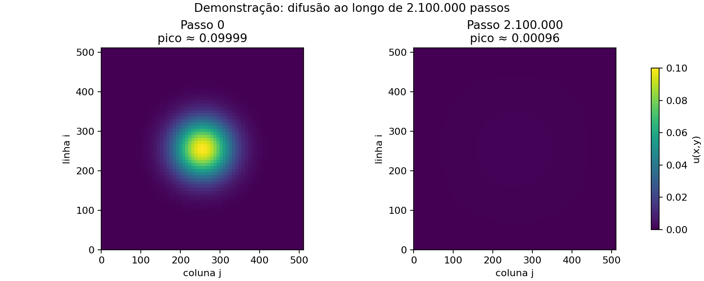

1. Sua entrega
O código implementa uma simplificação viscosa de Navier–Stokes: simula uma componente da velocidade por
difusão, omitindo advecção, pressão e forças externas. Você vai comparar sete variantes: sequencial e
static, dynamic, guided, cada política com e sem collapse.
Cada arquivo tarefa11/v*.c contém o programa completo, duplicado intencionalmente para comparar
as mudanças diretamente.
Base teórica na Teoria 11: modelo, estabilidade, contornos e hardware. Fonte primária recomendada: slides 33–36 do professor, identificados na teoria.
2. Leia o caminho de um passo
// Compare os arquivos completos:
// v1_static.c
#pragma omp for schedule(static)
// v2_static_collapse.c
#pragma omp for collapse(2) schedule(static)
// v3_dynamic.c
#pragma omp for schedule(dynamic,16)
// v4_dynamic_collapse.c
#pragma omp for collapse(2) schedule(dynamic,16)
// v5_guided_collapse.c
#pragma omp for collapse(2) schedule(guided,16)
// v6_guided.c
#pragma omp for schedule(guided,16)
Compile v0 sem OpenMP, e v1–v6 com -fopenmp. Compare, por exemplo,
diff -u v1_static.c v2_static_collapse.c: além da identificação da versão, muda apenas o
pragma de distribuição.
| Linha/bloco de cada v*.c | O que verificar |
|---|---|
| _POSIX_C_SOURCE; includes | Disponibilizam temporização POSIX, alocação, conversão, matemática e OpenMP. |
| integer(...), strtol(..., &end, 10) | O ponteiro end recebe onde a conversão terminou. errno, limites e sufixos inválidos são verificados; *out recebe o inteiro validado. |
| tamanho_grid; num_passos_tempo | Fixam uma malha 512×512 e 500 atualizações temporais. A linha de comando recebe apenas modo e saída opcional. |
| malloc(count * sizeof(*u)) | u e v apontam para buffers independentes; verificar NULL e liberar ambos em caso de falha. |
| nu, dt, dx, r | Constantes fixas que resultam em r=0.02. O usuário não altera r pela linha de comando. |
| laços de inicialização | Calculam x, y e sigma=N/10; impõem bordas coerentes desde o início. Gaussiana tem amplitude 0.1. |
| memcpy(v, u, ...) | Copia também as bordas, que não serão escritas durante os passos. |
| agora(), clock_gettime(..., &t) | Passa o endereço de timespec à função; converte tv_sec e tv_nsec em segundos. Falha encerra a execução. |
#pragma omp parallel default(none) shared(u,v,tamanho_grid,num_passos_tempo,r,threads)
{
#pragma omp single
threads = omp_get_num_threads();
for (int t = 0; t < num_passos_tempo; ++t) {
#pragma omp for schedule(static)
for (int i = 1; i < tamanho_grid-1; ++i) {
for (int j = 1; j < tamanho_grid-1; ++j) {
size_t c = (size_t)i*tamanho_grid+j;
v[c] = u[c] + r*(u[c-1]+u[c+1]+u[c-tamanho_grid]+u[c+tamanho_grid]-4*u[c]);
}
} // barreira implícita: campo novo pronto
#pragma omp single
{ double *tmp = u; u = v; v = tmp; }
// barreira implícita: ponteiros trocados para todas as threads
}
}
Esse trecho mostra a região paralela escrita diretamente em v1. t, i,
j, c e tmp são locais às threads. Cada thread percorre os passos t;
o for OpenMP reparte apenas o trabalho espacial. Não adicione nowait: a próxima
leitura depende dessas barreiras.
c±1 são vizinhos na linha; c±tamanho_grid, nas linhas adjacentes. A troca muda endereços,
não copia matrizes. Depois do cronômetro, um laço calcula mínimo, pico e soma; fprintf exporta
o campo opcional com 17 dígitos, fclose verifica escrita e free libera os buffers.
3. Valide antes de medir
bash tarefa11/test.sh
cd tarefa11
gcc -std=c11 -O2 -Wall -Wextra v0_seq.c -lm -o ns_v0
./ns_v0 1 zero.txt
./ns_v0 2 constante.txt
./ns_v0 0 perturbacao.txtParado deve continuar zero. Constante deve continuar um em cada célula: soma 262144 para a grade 512×512. Na gaussiana, o pico final deve ser menor que 0,1 e os valores devem permanecer não negativos. O gráfico de difusão compara o campo inicial calculado com o campo após 500 passos.
test.sh compila com avisos tratados como erros e realiza 30 comparações de campos completos de
512×512. Verifica os três modos e executa a perturbação com 1, 2 e 4 threads, além de rejeitar entradas inválidas. Igualdade apenas de pico e soma não garante igualdade espacial.
Explore o campo em 3D
A altura e a cor representam u(x,y), a componente de velocidade simulada sobre o plano
x–y. O terceiro eixo representa o valor do campo, não uma terceira dimensão espacial do fluido.
Arraste a superfície para girar ou use os controles de rotação e inclinação com o teclado.

Malha 512×512 · 2.100.000 passos · 201 quadros · r = 0,02
Preparando visualização…
A demonstração usa 201 quadros calculados previamente em C, do passo 0 ao 2.100.000, com mais quadros no início e intervalos maiores no final.
A malha completa usa o mesmo stencil, buffers alternados, parâmetros e bordas fixas
de v0_seq.c: ν = 0,1, Δt = 0,2, Δx = 1 e σ = 51,2. O navegador desenha amostras de 65×65
vértices; o pico foi calculado sobre todas as 512×512 células. Os valores exibidos têm a precisão
reduzida para float32 após o cálculo em double. A escala vertical e de cores fica fixa durante
a evolução (0–0,1 na gaussiana; 0–1 no campo unitário).
Compare os passos 0 e 2.100.000: o pico cai aproximadamente 99,04%, deixando menos de 1% da altura inicial. O campo se aproxima de zero, sem zerar exatamente. O tempo simulado avança de forma não uniforme entre os quadros. A reprodução avança a 30 quadros por segundo e dura cerca de 6,7 segundos; em dispositivos lentos, pode pular quadros para acompanhar o relógio. Os campos zero e unitário permanecem invariantes. O benchmark e a figura do relatório continuam com 500 passos (queda inferior a 1%). Esta demonstração prolongada não mede desempenho OpenMP.
4. Meça uma variável por vez
bash tarefa11/execute.sh
# O script percorre de 1 até nproc threads.
python3 tarefa11/plot_results.py tarefa11/runs/EXECUCAO/raw.csv
bash tarefa11/execute_chunks.sh
python3 tarefa11/plot_chunks.py tarefa11/runs/CHUNKS/raw_chunks.csv
Flags: -std=c11 -O2 -Wall -Wextra, -lm e -fopenmp apenas nas
paralelas. O script faz aquecimento, mede o sequencial e guarda cada repetição. Registra compilador, CPU,
afinidade, hashes dos fontes e threads reais. A região medida inclui equipe paralela, stencil,
barreiras e troca; exclui alocação, inicialização, diagnósticos e exportação.
| Versão | Distribuição |
|---|---|
| v1 / v2 | static por linhas / por células |
| v3 / v4 | dynamic,16 por linhas / por células |
| v6 / v5 | guided,16 por linhas / por células |
Compare pares, não apenas o melhor ponto. Use a mediana das cinco repetições; os pontos de 26 a 28 threads foram confirmados com dez repetições porque a primeira varredura apresentou picos abruptos. Chunk 16 significa 16 linhas sem collapse e 16 células com collapse. O experimento adicional usa chunks equivalentes a 1, 4, 16 e 64 linhas; com collapse, multiplica cada valor pelas 510 células internas de uma linha.
Na varredura de 1 a 28 threads, static sem collapse obteve o menor tempo global com 16 threads e manteve tempo semelhante com 28. Os picos iniciais em 26–28 threads não se repetiram sistematicamente no ensaio de confirmação. Dynamic com collapse e chunk 16 foi prejudicado pela granularidade de apenas 16 células; o estudo de chunks equivalentes separa esse custo do efeito de collapse.
5. Recuperação ativa
Em v1, o que omp for distribui?
Campo inicial unitário, bordas unitárias e r=0.02: após 100 passos, qual resultado é esperado?
Para ensaiar a defesa, abra v1 e v2 lado a lado e explique sem consultar a teoria: qual linha estabelece a equipe, qual reparte o trabalho e quais variáveis são compartilhadas? Aponte as duas barreiras e descreva uma falha possível se cada uma for retirada. Calcule quantas atualizações cabem em um chunk 16 nos dois arquivos para N=512. Depois justifique por que sections não foi usado e onde você experimentaria simd, sem afirmar que essa variante já foi medida. Revise as distinções na Fundamentação teórica e traga suas respostas ao agente para praticar a defesa.
Fundamentação teórica
Teoria, modelagem matemática e contexto de HPC integrados à prática desta tarefa.
1. O modelo e seus limites
O roteiro do professor, em assets/index.md, slides 33–36, pede diferenças finitas, validação e comparação de schedule, chunksize e collapse. O problema liga a computação de fluidos ao particionamento de matrizes.
Para viscosidade cinemática constante, Navier–Stokes inclui advecção, pressão, difusão viscosa e forças externas:
$$\partial_t\mathbf{u}+(\mathbf{u}\cdot\nabla)\mathbf{u}=-\rho^{-1}\nabla p+\nu\nabla^2\mathbf{u}+\mathbf{f}.$$
Se fossem removidas apenas a pressão e as forças externas, o termo de advecção ainda permaneceria. Nesta tarefa, adotamos a leitura de “apenas efeitos da viscosidade” que também omite a advecção. Resta $\partial_t u=\nu\nabla^2u$, resolvida para uma componente escalar da velocidade. Esta é uma simplificação de Navier–Stokes, não um solver completo de escoamento incompressível: não há advecção, projeção de pressão nem imposição de divergência nula.
Esse operador aparece em solvers de fluidos e também na condução térmica. Estudar seu stencil isoladamente permite separar custo de memória, sincronização e distribuição de trabalho.
2. Do Laplaciano ao stencil
Expandir $u(x+h)$ e $u(x-h)$ em Taylor e somar cancela os termos ímpares. Assim, $\partial_{xx}u\approx(u_{i+1,j}-2u_{i,j}+u_{i-1,j})/\Delta x^2$. Repetimos em $y$ e usamos Euler explícito no tempo:
$$u^{n+1}_{i,j}=u^n_{i,j}+r_x(u^n_{i-1,j}-2u^n_{i,j}+u^n_{i+1,j})+r_y(u^n_{i,j-1}-2u^n_{i,j}+u^n_{i,j+1}),$$ $$r_x=\nu\Delta t/\Delta x^2,\qquad r_y=\nu\Delta t/\Delta y^2.$$
Para solução suave, o erro global é $O(\Delta t+\Delta x^2+\Delta y^2)$, sob estabilidade. Para comparar refinamentos do mesmo problema físico, mantenha o domínio fixo e ajuste $\Delta t$ proporcionalmente a $h^2$. No benchmark, $\Delta x=1$ fica fixo: aumentar N aumenta o domínio, não refina o mesmo domínio.
O fator de amplificação de Fourier é $G=1-4r_x\sin^2(k_x\Delta x/2)-4r_y\sin^2(k_y\Delta y/2)$. A condição $|G|\le1$ dá $r_x+r_y\le1/2$. Para espaçamento igual: $0\le r\le1/4$. No código, $\nu=0.1$, $\Delta t=0.2$, $\Delta x=\Delta y=1$: $r=0.02$.
Também podemos escrever o passo como média ponderada: peso $1-4r$ no centro e $r$ em cada vizinho. Pesos não negativos somam um; não surgem novos extremos. Isso fundamenta os testes de mínimo, máximo e ausência de oscilações.
double usa IEEE 754 binary64 no ambiente x86_64: 53 bits de precisão e epsilon $2^{-52}$. Erro de arredondamento não é erro de discretização. Não use -ffast-math ao exigir comparação exata entre variantes; somas de diagnóstico podem depender da ordem das operações.
3. Condições de contorno são parte do teste
O campo parado usa zero em toda a grade e nas bordas. O campo constante usa um em toda a grade inclusive nas bordas. Ambos devem permanecer exatamente iguais. Zerar as bordas de um campo inicialmente unitário muda o problema: ele passa a difundir em direção às paredes, e não testa preservação de constantes.
A perturbação é uma gaussiana de amplitude 0.1 e largura $\sigma=N/10$, centrada em $(N-1)/2$. As bordas são zero desde o instante inicial. Seu pico cai, a região perturbada se alarga e a solução permanece não negativa. A soma pode diminuir: bordas Dirichlet permitem saída de quantidade difundida, logo conservação da soma não é exigida.
Dois buffers guardam instantes distintos. Cada célula nova lê somente o campo antigo. As bordas ficam fixas nos dois buffers; não precisamos atualizá-las nem escrever concorrentemente nos cantos.
4. Hardware: o custo de transportar os dados
O gargalo de von Neumann limita o transporte entre memória e processador. A Memory Wall descreve a diferença de evolução entre processamento e acesso à memória. A Power Wall limita frequência e potência, motivando vários núcleos. A hierarquia de registradores, L1, L2, LLC e RAM tenta reduzir esse custo.
Em C, a matriz linearizada usa i*N+j. Variar j acessa posições contíguas. Uma linha de cache de 64 bytes, comum em x86_64, comporta oito doubles. O stencil reutiliza vizinhos entre células e linhas: contar cinco leituras em C não significa cinco acessos à RAM.
Write-through propaga cada escrita ao nível seguinte; write-back mantém linhas modificadas (dirty) e as escreve quando necessário. Estados valid/invalid dizem se uma cópia pode ser usada. Snooping observa requisições de coerência; protocolos de diretório rastreiam quais caches possuem cópias, sem exigir um servidor central único.
Falso compartilhamento ocorre quando threads escrevem células distintas na mesma linha de cache. A coerência transfere a linha mesmo sem disputa pela mesma variável. Escrever o mesmo canto simultaneamente seria uma corrida verdadeira, mesmo armazenando zero. Partições estáticas contíguas reduzem as fronteiras entre threads, mas não garantem alinhamento.
Há dependência RAW entre passos temporais: o passo seguinte precisa ler os resultados anteriores. Não há dependência entre células atualizadas no mesmo passo com duplo buffer. A barreira de omp for precede a troca; a de single publica os ponteiros para todas as threads.
Em NUMA, first-touch pode colocar páginas perto de quem as inicializa. A inicialização serial deste código pode concentrar páginas em um nó. Fixar OMP_PLACES=cores e OMP_PROC_BIND=close não redistribui páginas. No NPAD, registre sockets, alocação do job e política de memória antes de atribuir uma curva a NUMA.
5. Particionamento e interpretação de desempenho
static sem chunk entrega blocos aproximadamente iguais com baixo custo de distribuição. dynamic,16 entrega blocos de 16 iterações sob demanda. guided,16 começa com blocos maiores e os reduz, com mínimo 16 salvo o último bloco. O stencil tem trabalho uniforme por célula; static é uma hipótese inicial, não uma vitória garantida.
Sem collapse, uma iteração distribuída é uma linha. Com collapse(2), é uma célula: o espaço passa de $N-2$ para $(N-2)^2$ iterações. Para N=512, dynamic,16 passa de 32 para 16.257 blocos por passo. O mesmo chunk numérico não representa o mesmo volume de trabalho. Teste também chunks equivalentes em células para separar granularidade e collapse.
Collapse pode expor paralelismo quando há poucas linhas. Não implica perda obrigatória de localidade nem divisão inteira por célula: isso depende do particionamento e do compilador. Mais despachos podem aumentar overhead; tempo elevado sozinho não comprova uma fila central específica.
Uma região paralela persistente envolve todos os passos. Evita reentrada na região a cada passo, mas mantém duas barreiras por passo. Runtimes podem reutilizar threads; fork/join não significa necessariamente criar threads do sistema operacional.
Dois campos N=512 ocupam 4 MiB. Se couberem na LLC, o limite pode ser cache ou sincronização, não RAM. Para distinguir, varie N e meça banda/cache misses. SMT, núcleos heterogêneos, afinidade e ruído são hipóteses a investigar, não conclusões automáticas.
$$S(p)=T_{seq}/T_p,\qquad E(p)=S(p)/p,$$ $$S_{Amdahl}(p)=\frac{1}{s+(1-s)/p},\qquad S_{Gustafson}(p)=p-\alpha(p-1).$$
Amdahl usa a fração serial s do trabalho fixo, sem overhead no modelo ideal. Gustafson usa a fração serial $\alpha$ do tempo paralelo com problema escalado. Reporte também $T_{omp,1}/T_{omp,p}$, mas não confunda essa referência com o sequencial sem OpenMP.
A medição corrigida percorre de 1 até 28 threads com grade 512×512 e 500 passos. Um ensaio separado varia chunks equivalentes a 1, 4, 16 e 64 linhas para distinguir granularidade do efeito de collapse. As amostras e os metadados ficam em tarefa11/runs/.
6. Sections, schedule e SIMD: três decisões distintas
Os slides 33–34 incluem sections, schedule, chunksize, collapse e simd. Para a defesa, diferencie a divisão por blocos de operações, a distribuição de iterações entre threads e a execução vetorial dentro de um núcleo.
Sections distribui blocos, não iterações
omp sections distribui blocos marcados por omp section à equipe existente. Cada bloco executa uma vez por uma thread; uma thread pode receber vários blocos. A atribuição depende da implementação. Duas seções permitem no máximo duas threads executando esses blocos simultaneamente, mesmo com uma equipe maior. Há barreira final, salvo nowait, e não existe cláusula schedule para sections.
Uma aplicação possível seria calcular dois diagnósticos independentes sobre um campo já pronto, escrevendo resultados distintos. Para o stencil, usar for evita escrever manualmente uma seção por região e permite ajustar a distribuição ao tamanho da equipe. Nenhuma das sete versões usa sections.
Detalhes de schedule que mudam a resposta
static sem chunk entrega no máximo um bloco aproximadamente equilibrado por thread. static,k entrega blocos ciclicamente: com quatro threads, 16 iterações e k=2, a thread 0 recebe 0–1 e 8–9. Não confunda os dois casos. dynamic sem chunk usa 1; guided sem chunk usa mínimo 1. Guided não garante blocos de tamanho fixo nem uma sequência universal de tamanhos.
Schedule não controla afinidade, não cria threads e não corrige corridas. OMP_SCHEDULE controla laços com schedule(runtime), não substitui as políticas explícitas destes arquivos. Chunk conta iterações lógicas: não mede bytes, núcleos ou threads.
SIMD não é uma equipe de threads
omp simd permite executar iterações por instruções vetoriais: múltiplos elementos sob a mesma instrução. Não cria threads. É possível distribuir linhas com omp for e vetorizar o laço interno j com omp simd. omp for simd é outra construção disponível para combinar os dois níveis.
O stencil com buffers separados favorece a independência espacial; a leitura de vizinhos não impede SIMD quando todas essas leituras usam o campo antigo. Não declare alinhamento de 64 bytes sem garanti-lo. As versões atuais não usam simd explícito, mas o compilador pode autovetorizar. Para confirmar, consulte relatórios do GCC com -fopt-info-vec-optimized e -fopt-info-vec-missed; não deduza vetorização apenas do tempo.
Escopos e sincronização no código
parallel estabelece a equipe; for reparte o trabalho dessa equipe. Um laço C comum dentro de parallel é percorrido por cada thread. Por isso t é local e percorre todos os passos, enquanto o for OpenMP reparte i ou (i,j). Os ponteiros u e v são compartilhados; torná-los private não cria matrizes privadas inicializadas. single escolhe uma thread, não necessariamente a principal.
Antes de escolher a política, explique por que cada célula tem um único escritor e por que as barreiras protegem a troca. Isso fundamenta a correção; schedule determina quem faz o trabalho. A semântica normativa desses recursos está nas fontes oficiais detalhadas em RESOURCES.md.
Questões adicionais
Conferir resposta
Resposta: A. Quando combina laços aninhados realmente independentes entre si.
Conferir resposta
Resposta: A. Mesma malha passos threads afinidade e compilação.
Apêndice: Referência rápida
| Tipo / função / flag | Uso e cuidado |
|---|---|
| int / size_t | Contadores / índices e tamanhos. size_t também transborda: verificar antes de multiplicar. |
| double / double * | Valor de velocidade / endereço do buffer. |
| strtol, errno | Validar texto, intervalo e fim da conversão; rejeitar entradas inválidas. |
| malloc, free, memcpy | Alocar, liberar e copiar bordas/inicialização para o segundo buffer. |
| exp, fmin, fmax | Gaussiana e diagnósticos; ligar libm com -lm. |
| clock_gettime, struct timespec | POSIX: CLOCK_MONOTONIC; segundos + nanossegundos/1e9; verificar retorno. |
| fopen, fprintf, fclose | Exportar campo após o trecho cronometrado; verificar erros de escrita. |
| -std=c11 -O2 -Wall -Wextra | Padrão, otimização e avisos usados nos testes. |
| -fopenmp / -lm | OpenMP somente nas variantes paralelas / biblioteca matemática. |
| _POSIX_C_SOURCE 199309L | Definir antes dos includes para disponibilizar clock_gettime. |
| Pragma | Regra |
|---|---|
| omp parallel default(none) shared(...) | Equipe persistente; escopos explícitos não garantem ausência de corridas. |
| omp for schedule(static) | Divide linhas; blocos estáticos sem chunk explícito. |
| omp for schedule(dynamic,16) | Blocos fixos distribuídos sob demanda. |
| omp for schedule(guided,16) | Blocos decrescentes; mínimo 16 salvo resto final. |
| omp for collapse(2) schedule(static) | Distribui pares (i,j) de laços canônicos. |
| omp single | Uma thread troca ponteiros; barreira implícita ao final. |
| omp sections / omp simd | Seções distintas / paralelismo vetorial; não são substitutos de schedule. |
Resumo executivo
$r=0.02\le1/4$; erro $O(\Delta t+h^2)$; dois buffers custam $16N^2$ bytes. Constante exige borda constante. Barreira antes e depois da troca. Comece com static; compare todas as políticas com e sem collapse. Meça repetições, threads reais e referência sequencial; não deduza gargalo só do speedup.
Fonte primária da tarefa: slides 33–36 do professor. Referências adicionais e documentação oficial estão em RESOURCES.md.